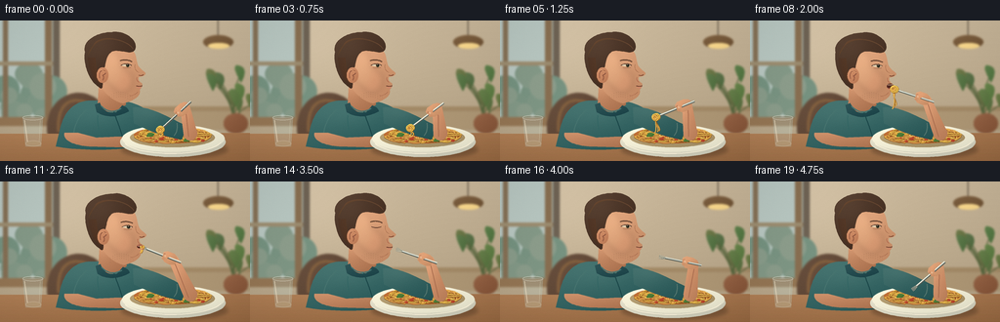
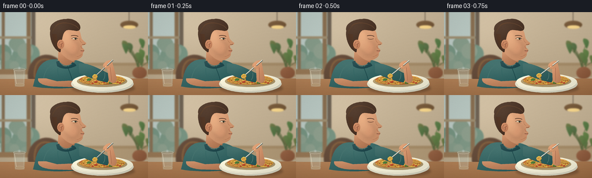

CODING AGENTS AS PIXEL WORLD MODELS
traex/GPT-6.1-Sol · motion_rationality_0005
点击播放 · 原生 RGB 像素
逐轮保存的候选
回放视频、检查图与代码变化。
每份候选均可单独播放。实际图片检查记录在下方工具轨迹中。
候选 01播放与检查图
点击播放 · 原生 RGB 像素


展开代码变化
--- 上一保存版本
+++ 本次保存版本
@@ -0,0 +1,286 @@
+from pathlib import Path
+import math
+import numpy as np
+from PIL import Image, ImageDraw, ImageFilter
+import artifact_io
+
+ROOT = Path(__file__).resolve().parent
+W,H,S = 256,144,4
+rng = np.random.default_rng(318)
+
+def path_points(commands):
+ out=[]; p=(0.,0.)
+ for cmd in commands:
+ if cmd[0]=='M': p=(cmd[1],cmd[2]);out.append(p)
+ elif cmd[0]=='L':p=(cmd[1],cmd[2]);out.append(p)
+ elif cmd[0]=='C':
+ a=np.array(p);b=np.array(cmd[1:3]);c=np.array(cmd[3:5]);d=np.array(cmd[5:7])
+ for t in np.linspace(0,1,22)[1:]:out.append(tuple((1-t)**3*a+3*(1-t)**2*t*b+3*(1-t)*t*t*c+t**3*d))
+ p=tuple(d)
+ elif cmd[0]=='Q':
+ a=np.array(p);b=np.array(cmd[1:3]);c=np.array(cmd[3:5])
+ for t in np.linspace(0,1,18)[1:]:out.append(tuple((1-t)**2*a+2*(1-t)*t*b+t*t*c))
+ p=tuple(c)
+ return out
+
+def curve(im, points, col, width=1, offset=(0,0)):
+ if points and isinstance(points[0][0],str):points=path_points(points)
+ pts=[(round((x+offset[0])*S),round((y+offset[1])*S)) for x,y in points]
+ ImageDraw.Draw(im).line(pts,fill=col,width=max(1,round(width*S)),joint='curve')
+
+def ellipse(im, box, color):
+ ImageDraw.Draw(im).ellipse(tuple(round(v*S) for v in box),fill=color)
+
+def gradshape(im, points, base, light=(-8,-12), strength=30, offset=(0,0), noise=0):
+ if isinstance(points[0][0],str):points=path_points(points)
+ pts=[(x+offset[0],y+offset[1]) for x,y in points]
+ x0=max(0,int(min(p[0] for p in pts)*S)-1);y0=max(0,int(min(p[1] for p in pts)*S)-1)
+ x1=min(W*S,int(max(p[0] for p in pts)*S)+2);y1=min(H*S,int(max(p[1] for p in pts)*S)+2)
+ if x1<=x0 or y1<=y0:return
+ mask=Image.new('L',(x1-x0,y1-y0))
+ ImageDraw.Draw(mask).polygon([(int(x*S)-x0,int(y*S)-y0) for x,y in pts],fill=255)
+ yy,xx=np.mgrid[y0:y1,x0:x1].astype(float)/S
+ cx=(x0+x1)/2/S;cy=(y0+y1)/2/S
+ rx=max((x1-x0)/2/S,2);ry=max((y1-y0)/2/S,2)
+ value=(.5- .30*(xx-cx)/rx-.38*(yy-cy)/ry)*strength
+ value+=strength*.3*np.exp(-((xx-cx-light[0])/rx)**2*3-((yy-cy-light[1])/ry)**2*3)
+ color=np.array(base)[None,None,:]+value[:,:,None]*np.array([1,.91,.79])
+ if noise:color+=rng.normal(0,noise,(y1-y0,x1-x0,1))
+ im.paste(Image.fromarray(np.uint8(np.clip(color,0,255))),(x0,y0),mask)
+
+def blob(im,box,base,strength=30):
+ x0,y0,x1,y1=box
+ pts=[((x0+x1)/2+(x1-x0)/2*math.cos(t),(y0+y1)/2+(y1-y0)/2*math.sin(t)) for t in np.linspace(0,math.tau,80)]
+ gradshape(im,pts,base,strength=strength)
+
+def smooth(a):return a*a*(3-2*a)
+def mix(a,b,t):return np.array(a)*(1-t)+np.array(b)*t
+
+# Quiet, softly out-of-focus cafe. All scenery is drawn from geometric forms.
+y,x=np.mgrid[0:H*S,0:W*S].astype(float)/S
+bg=np.zeros((H*S,W*S,3))
+for c,v in enumerate((202,184,155)):
+ bg[:,:,c]=v+16*np.exp(-((x-56)/75)**2-((y-27)/72)**2)-.17*y
+bg=Image.fromarray(np.uint8(np.clip(bg,0,255)))
+d=ImageDraw.Draw(bg)
+d.rectangle((0,0,61*S,105*S),fill=(112,100,85))
+d.rectangle((0,0,54*S,101*S),fill=(186,201,195))
+# Window light, distant greenery, and a warm wooden frame.
+for j in range(14):
+ xx=float(rng.uniform(0,54));yy=float(rng.uniform(45,101));rr=float(rng.uniform(7,20))
+ ellipse(bg,(xx-rr,yy-rr,xx+rr,yy+rr),(116+j*2,146+j,128+j))
+d=ImageDraw.Draw(bg)
+d.rectangle((3*S,0,8*S,107*S),fill=(135,113,86))
+d.rectangle((46*S,0,53*S,107*S),fill=(138,112,82))
+d.rectangle((0,42*S,54*S,46*S),fill=(158,142,113))
+d.rectangle((0,99*S,67*S,108*S),fill=(150,119,85))
+# Back wall molding and chair.
+d.rectangle((62*S,88*S,256*S,93*S),fill=(163,138,103))
+d.rectangle((64*S,93*S,256*S,112*S),fill=(174,151,117))
+blob(bg,(48,74,113,145),(89,65,49),14)
+curve(bg,[('M',60,114),('C',57,79,80,74,99,91)],(132,97,63),3)
+# Pendant glow and plant, clearly behind the person.
+curve(bg,[(223,0),(223,17)],(91,78,62),1)
+blob(bg,(208,15,239,29),(111,82,52),16)
+blob(bg,(213,23,235,29),(245,212,137),12)
+for j in range(11):
+ root=(240,108);end=(float(rng.uniform(215,263)),float(rng.uniform(47,89)))
+ curve(bg,[('M',*root),('Q',237,end[1]+12,*end)],(88,102,62),.9)
+ ex,ey=end
+ gradshape(bg,[('M',ex,ey+8),('Q',ex-10,ey-9,ex-4,ey-10),('Q',ex+9,ey-8,ex,ey+8)],(79+j%3*9,104+j%4*5,63),strength=15)
+blob(bg,(229,95,254,116),(133,84,56),15)
+bg=bg.filter(ImageFilter.GaussianBlur(1.05*S))
+# Table top, with subtle wood grain and foreground depth.
+gradshape(bg,[(0,116),(256,115),(256,144),(0,144)],(151,104,65),strength=26)
+for j in range(23):
+ yy=117+j*1.3
+ curve(bg,[('M',0,yy),('C',67,yy-1.1,145,yy+1,256,yy-.3)],(157+j%3*3,113+j%4*2,76+j%3*2),.22)
+# Resting left hand and arm behind the plate.
+shirt=[('M',92,82),('C',77,83,66,91,61,113),('L',57,129),('C',82,134,127,134,163,126),('L',153,94),('C',140,83,123,81,115,82)]
+gradshape(bg,shirt,(39,88,88),strength=28,noise=.5)
+curve(bg,[('M',89,91),('C',76,101,75,114,74,126)],(71,117,112),1.0)
+curve(bg,[('M',116,92),('C',120,105,126,116,127,131)],(27,71,73),1.1)
+curve(bg,[('M',100,97),('C',99,109,103,117,103,125)],(50,101,99),.65)
+gradshape(bg,[('M',66,115),('C',64,122,74,128,91,129),('L',126,130),('Q',143,129,137,122),('C',130,117,111,120,99,120),('L',80,115)],(174,116,81),strength=31)
+for j in range(3):curve(bg,[('M',124+j*3,122),('Q',131+j*2,122,134+j,127)],(148,90,68),.55)
+# A subtly reflective water glass on the left side of the table.
+glass=Image.new('RGBA',bg.size,(0,0,0,0)); gd=ImageDraw.Draw(glass)
+gd.polygon([(23*S,99*S),(44*S,99*S),(42*S,129*S),(26*S,129*S)],fill=(196,222,215,68))
+gd.ellipse((23*S,97*S,44*S,102*S),outline=(234,238,224,170),width=2)
+gd.ellipse((26*S,123*S,42*S,129*S),fill=(205,213,187,90),outline=(232,236,218,120),width=2)
+gd.line([(25*S,102*S),(28*S,124*S)],fill=(254,243,216,190),width=3)
+gd.line([(41*S,102*S),(40*S,124*S)],fill=(225,236,214,125),width=2)
+bg=Image.alpha_composite(bg.convert('RGBA'),glass).convert('RGB')
+
+# Ceramic bowl and individual intertwined spaghetti strands.
+shadow=Image.new('RGBA',bg.size,(0,0,0,0))
+ImageDraw.Draw(shadow).ellipse((124*S,123*S,233*S,141*S),fill=(45,31,20,80))
+shadow=shadow.filter(ImageFilter.GaussianBlur(2*S));bg=Image.alpha_composite(bg.convert('RGBA'),shadow).convert('RGB')
+blob(bg,(123,109,231,140),(203,202,183),strength=32)
+blob(bg,(125,107,230,135),(233,230,207),strength=21)
+blob(bg,(133,110,220,130),(165,144,102),strength=23)
+blob(bg,(137,109,216,126),(173,95,40),strength=24)
+noodles=[]
+for j in range(66):
+ cx=float(rng.uniform(145,208));cy=float(rng.uniform(114,123));rx=float(rng.uniform(3,12));ry=float(rng.uniform(1.0,3.9));phase=float(rng.uniform(0,6.2))
+ pts=[]
+ for tt in np.linspace(0,math.tau*1.25,58):
+ px=cx+rx*math.cos(tt+phase);py=cy+ry*math.sin(tt+phase)
+ if ((px-177)/39)**2+((py-118)/9)**2<1.03:pts.append((px,py))
+ if len(pts)>2:noodles.append((pts,j))
+for pts,j in noodles:
+ curve(bg,pts,(136,79,29),1.50)
+ curve(bg,[(px,py-.25) for px,py in pts],(225+j%4*5,170+j%5*5,72+j%3*8),.94)
+ if j%3==0:curve(bg,[(px,py-.47) for px,py in pts[:22]],(249,201,106),.35)
+for j in range(14):
+ xx=float(rng.uniform(146,209));yy=float(rng.uniform(115,124)); rr=float(rng.uniform(1,2.4))
+ blob(bg,(xx-rr,yy-rr*.6,xx+rr,yy+rr*.6),(174,61,35),strength=22)
+for xx,yy in [(153,118),(196,114),(191,123)]:
+ gradshape(bg,[('M',xx-3,yy+1),('Q',xx-2,yy-5,xx+5,yy-2),('Q',xx+5,yy+2,xx-3,yy+1)],(60,109,46),strength=24)
+ curve(bg,[(xx-2,yy+1),(xx+3,yy-2)],(121,149,68),.35)
+curve(bg,[('M',128,126),('C',143,140,213,139,226,125)],(252,244,220),1.0)
+
+# Head construction, in three-quarter profile looking toward the fork.
+face=[('M',104,24),('C',113,21,129,23,134,29),('C',140,33,139,40,141,45),('C',142,49,148,52,149,54),('Q',149,57,142,58),('Q',141,62,145,64),('Q',147,67,143,71),('C',145,78,135,83,126,85),('C',117,83,108,76,103,67),('C',99,55,96,36,104,24)]
+hair=[('M',101,68),('C',91,62,85,44,87,32),('C',84,21,99,12,114,12),('C',127,9,143,21,138,30),('C',134,37,120,27,113,33),('C',107,39,109,47,105,52),('L',105,66),('Q',105,72,101,68)]
+
+def draw_head(im,dx,dy,opening,blink,chew):
+ of=(dx,dy)
+ gradshape(im,[('M',101,68),('L',100,85),('Q',106,96,119,93),('L',129,86),('L',125,75)],(169,112,78),strength=32,offset=of)
+ gradshape(im,[('M',102,84),('Q',107,97,119,94),('L',125,87),('Q',131,89,132,93),('Q',114,103,99,94),('L',97,86)],(27,67,72),strength=18,offset=of)
+ curve(im,[('M',103,87),('Q',112,97,124,90)],(72,116,112),1.2,of)
+ gradshape(im,face,(194,137,100),strength=35,offset=of,noise=.2)
+ # Broad cheek glows, softly blended into the skin instead of hard contour lines.
+ cheek=Image.new('RGBA',im.size,(0,0,0,0)); cd=ImageDraw.Draw(cheek)
+ cd.ellipse(((114+dx)*S,(49+dy)*S,(136+dx)*S,(74+dy)*S),fill=(237,162,123,45))
+ cd.ellipse(((105+dx)*S,(30+dy)*S,(124+dx)*S,(66+dy)*S),fill=(255,208,155,29))
+ cheek=cheek.filter(ImageFilter.GaussianBlur(3*S));im.paste(Image.alpha_composite(im.convert('RGBA'),cheek).convert('RGB'))
+ gradshape(im,hair,(63,42,30),strength=22,offset=of)
+ # Flowing fine hair strokes following the swept-back haircut.
+ for j in range(18):
+ k=j/17
+ curve(im,[('M',90+7*k,36-13*k),('C',94+9*k,17-3*k,117+13*k,14+4*k,134+2*k,26+3*k)],(91+int(k*12),64+int(k*7),43+int(k*6)),.47,of)
+ for j in range(9):
+ curve(im,[('M',90+j*.9,38),('Q',91+j*.95,54,101+j*.2,64)],(79+j,51+j//2,34),.42,of)
+ # Ear with a shadowed concha and a warm rim.
+ blob(im,(99+dx,48+dy,111+dx,64+dy),(188,123,87),strength=25)
+ curve(im,[('M',102,59),('C',100,51,106,49,108,53),('Q',108,55,105,56),('Q',107,58,105,61)],(139,83,62),.75,of)
+ curve(im,[('M',101,52),('Q',104,49,108,53)],(230,165,117),.6,of)
+ # Brow, lids, iris, subtle lower lash and nose modelling.
+ curve(im,[('M',123,41),('Q',129,38.9,135,42)],(76,49,35),1.1,of)
+ if blink<.5:
+ gradshape(im,[('M',124,46),('Q',129,42.6,134.6,46),('Q',130,48,124,46)],(229,213,181),strength=4,offset=of)
+ ellipse(im,(129+dx,43.9+dy,132.3+dx,47.7+dy),(73,68,46))
+ ellipse(im,(130+dx,44.4+dy,131.8+dx,47.1+dy),(35,33,28))
+ ellipse(im,(130.1+dx,44.5+dy,130.8+dx,45.3+dy),(255,236,196))
+ curve(im,[('M',123.8,45.9),('Q',129,42.8,134.7,46)],(74,48,37),.73,of)
+ curve(im,[('M',126,48.2),('Q',131,49.1,134,47.9)],(162,108,80),.38,of)
+ else:curve(im,[('M',124,46),('Q',129,48,134,46)],(80,49,37),.8,of)
+ curve(im,[('M',138,45),('Q',137,51,142,53)],(165,110,77),.47,of)
+ curve(im,[('M',146.8,55.3),('Q',144.5,57,142,55.9)],(124,76,55),.69,of)
+ curve(im,[('M',140,58),('Q',139,61,142,63)],(166,98,74),.45,of)
+ # Open mouth is small, in profile; the opening grows as the fork arrives.
+ if opening>.05:
+ blob(im,(139.4+dx,64.1+dy,146.3+dx,66.2+dy+4.3*opening),(78,37,29),strength=9)
+ curve(im,[('M',140,65.2),('Q',143,65.4,145.4,64.8)],(241,208,172),.6,of)
+ curve(im,[('M',140.6,67+opening*2.5),('Q',143,68+opening*2.0,145,66.8+opening*2.6)],(182,97,77),.92,of)
+ else:
+ curve(im,[('M',139.4,66.8),('Q',143,67.9+chew,145.5,66.7)],(108,61,46),.75,of)
+ curve(im,[('M',140.3,68.2),('Q',143.1,69.6+chew,144.2,68.2)],(208,133,108),.72,of)
+ curve(im,[('M',133,77),('Q',139,76,141,73)],(163,103,74),.5,of)
+ # Extremely restrained stubble along the jaw, for dimensional human detail.
+ for j in range(32):
+ xx=112+(j%11)*2.3; yy=73+(j//11)*2.3+.035*(xx-123)**2
+ if yy<82:curve(im,[(xx+dx,yy+dy),(xx+.25+dx,yy+.45+dy)],(149,103,77),.25)
+
+
+def capsule(im,a,b,r0,r1,col):
+ a=np.array(a);b=np.array(b);u=(b-a)/np.linalg.norm(b-a);v=np.array([-u[1],u[0]])
+ pts=[]
+ for t in np.linspace(math.pi/2,math.pi*1.5,24):pts.append(tuple(a+r0*(math.cos(t)*u+math.sin(t)*v)))
+ for t in np.linspace(-math.pi/2,math.pi/2,24):pts.append(tuple(b+r1*(math.cos(t)*u+math.sin(t)*v)))
+ gradshape(im,pts,col,strength=30)
+
+frames=[]
+for i in range(20):
+ im=bg.copy()
+ # A single complete, deliberate bite: collect, lift, eat, withdraw, and lower.
+ if i<=3:
+ q=i/3; tip=np.array([163+math.sin(q*math.tau)*1.6,113-q*2]);angle=mix([-.73,.68],[-.80,.60],q)
+ bundle=1; hang=7+q*2
+ elif i<=9:
+ q=smooth((i-3)/6);tip=mix([163,111],[145,66.7],q);angle=mix([-.80,.60],[-.93,-.37],q)
+ bundle=1;hang=9+15*math.sin(q*math.pi*.75)
+ elif i<=13:
+ q=(i-9)/4;tip=np.array([145-.8*math.sin(q*math.pi),66.7]);angle=np.array([-.93,-.37]);bundle=max(0,1-q*1.35);hang=19*(1-q)**1.5
+ elif i<=16:
+ q=smooth((i-13)/3);tip=mix([145,66.7],[163,77],q);angle=mix([-.93,-.37],[-.98,-.20],q);bundle=0;hang=0
+ else:
+ q=smooth((i-16)/3);tip=mix([163,77],[166,111],q);angle=mix([-.98,-.20],[-.76,.65],q);bundle=0;hang=0
+ angle=angle/np.linalg.norm(angle);v=np.array([-angle[1],angle[0]])
+ hand=tip-angle*31
+ lean=2.0*math.sin(np.clip((i-5)/10,0,1)*math.pi) if i>=5 else 0
+ opening=(smooth((i-6)/3) if 6<i<=9 else max(0,1-(i-9)/3.2) if 9<i<=13 else 0)
+ blink=1 if i in (2,14) else 0
+ draw_head(im,lean*.45,lean*.35,opening,blink,.3*math.sin(i*2.0) if i>=13 else 0)
+ # Shirt sleeve around upper arm; bare forearm pivots naturally about the elbow.
+ gradshape(im,[('M',136,89),('C',153,87,174,100,191,108),('L',186,122),('C',167,119,147,111,137,105)],(39,86,86),strength=25)
+ curve(im,[('M',181,105),('Q',182,114,178,118)],(85,120,112),1.1)
+ elbow=np.array([195,116])
+ capsule(im,elbow,hand-angle*5,7.1,4.9,(190,129,92))
+ curve(im,[tuple(elbow+np.array([-2,3])),tuple(hand-angle*7+np.array([-1,2]))],(165,105,76),.65)
+ def loc(x,y):return tuple(hand+angle*x+v*y)
+ palm=[loc(-8,-4.5),loc(-3,-6.4),loc(3,-5.8),loc(7,-2),loc(7,3.8),loc(3.5,6),loc(-4,5.8),loc(-8,3)]
+ gradshape(im,palm,(202,143,103),strength=26)
+ # Four-tined stainless fork. The handle runs through the closed fingers.
+ end=hand-angle*13;neck=tip-angle*6
+ curve(im,[tuple(end),tuple(neck)],(87,94,88),2.2)
+ curve(im,[tuple(end+v*.4),tuple(neck+v*.4)],(219,225,211),1.25)
+ curve(im,[tuple(end+v*.65),tuple(neck+v*.65)],(250,249,230),.38)
+ # The tines form a visible fan; their tips point at the mouth.
+ for k in range(4):
+ spread=(k-1.5)*1.06
+ curve(im,[tuple(neck+v*spread*.57),tuple(tip-angle*2+v*spread),tuple(tip+v*spread)],(106,112,103),.64)
+ curve(im,[tuple(neck+v*spread*.57+v*.14),tuple(tip-angle*2+v*spread+v*.14),tuple(tip+v*spread+v*.14)],(236,234,207),.31)
+ # Wrapped fingers occlude the fork handle, and a thumb closes over the grip.
+ for k in range(3):
+ p=[loc(1+k*1.7,-4.3),loc(4.7+k*.9,-3.5),loc(5+k*.8,1.7),loc(2.2+k*1.2,2.6)]
+ gradshape(im,p,(210-k*4,150-k*4,108-k*3),strength=16)
+ curve(im,[loc(2+k*1.5,2.5),loc(5+k*.75,1.8)],(155,98,73),.45)
+ thumb=[loc(-2,4.7),loc(1,5.2),loc(5.6,1.3),loc(4.8,-.7),loc(2.3,-1.4),loc(-.6,1)]
+ gradshape(im,thumb,(218,153,110),strength=15)
+ gradshape(im,[loc(3.5,-.8),loc(5.0,-.7),loc(5.2,.5),loc(4.1,1.3),loc(3.2,.5)],(228,181,143),strength=7)
+ # Golden noodle bundle remains rigidly attached to the tines, while the
+ # dangling strands sag under gravity and shorten as the mouth takes them in.
+ if bundle>0:
+ center=tip-angle*1.7
+ for j in range(3):
+ start=center+v*(j-1)*1.1
+ lng=hang*(.75+j*.12)
+ endp=start+np.array([2.5*math.sin(i*.32+j),lng])
+ pts=path_points([('M',*start),('C',start[0]-3+j,start[1]+lng*.4,endp[0]+3,endp[1]-3,*endp)])
+ curve(im,pts,(141,89,29),1.2)
+ curve(im,[(xx-.2,yy-.1) for xx,yy in pts],(246,193,88),.76)
+ for j in range(7):
+ rad=(2.1+(j%3)*.65)*math.sqrt(bundle)
+ pts=[]
+ for t in np.linspace(0,math.tau,45):
+ p=center+angle*(math.cos(t)*rad*.9+(j-3)*.46*bundle)+v*(math.sin(t)*rad)
+ pts.append(tuple(p))
+ curve(im,pts,(155,96,30),1.4*bundle+.2)
+ curve(im,[(xx-.14,yy-.2) for xx,yy in pts],(244,190+(j%3)*9,89),.85*bundle+.15)
+ # At contact, lips overlap the entering forkful rather than showing it on skin.
+ if 9<=i<=12:
+ of=(lean*.45,lean*.35)
+ curve(im,[('M',139.7,65.0),('Q',142.3,64.3,145.2,65.0)],(178,94,74),.85,of)
+ curve(im,[('M',140.7,67.6+opening*2),('Q',143.7,68+opening*1.5,145.5,67.3+opening*1.6)],(215,140,108),.92,of)
+ # Antialiasing and a fine, fixed film grain unify the drawn scene.
+ im=im.resize((W,H),Image.Resampling.LANCZOS)
+ arr=np.asarray(im).astype(float)
+ yy,xx=np.mgrid[0:H,0:W]
+ vign=1-.085*((xx-130)/173)**2-.06*((yy-74)/118)**2
+ arr=arr*vign[:,:,None]
+ grain=np.random.default_rng(923).normal(0,.43,(H,W,1))
+ frames.append(np.uint8(np.clip(arr+grain,0,255)))
+artifact_io.save(np.stack(frames),ROOT)
+print('Saved 20 RGB frames, 256x144, 4 fps to',ROOT)
可观测工具轨迹
实际执行的命令与返回图片。
命令 1exit 0
/bin/bash -lc 'ls -la && cat prompt.txt && cat GENERATION_RULES.md && cat task_spec.json'
命令 2exit 0
/bin/bash -lc "cat artifact_io.py && python - <<'PY'
import PIL,numpy
print('PIL',PIL.__version__)
PY"命令 3exit 0
/bin/bash -lc "cat > generate.py <<'PY'
from pathlib import Path
import math
import numpy as np
from PIL import Image, ImageDraw, ImageFilter
import artifact_io
ROOT = Path(__file__).resolve().parent
W,H,S = 256,144,4
rng = np.random.default_rng(318)
def path_points(commands):
out=[]; p=(0.,0.)
for cmd in commands:
if cmd[0]=='M': p=(cmd[1],cmd[2]);out.append(p)
elif cmd[0]=='L':p=(cmd[1],cmd[2]);out.append(p)
elif cmd[0]=='C':
a=np.array(p);b=np.array(cmd[1:3]);c=np.array(cmd[3:5]);d=np.array(cmd[5:7])
for t in np.linspace(0,1,22)[1:]:out.append(tuple((1-t)**3*a+3*(1-t)**2*t*b+3*(1-t)*t*t*c+t**3*d))
p=tuple(d)
elif cmd[0]=='Q':
a=np.array(p);b=np.array(cmd[1:3]);c=np.array(cmd[3:5])
for t in np.linspace(0,1,18)[1:]:out.append(tuple((1-t)**2*a+2*(1-t)*t*b+t*t*c))
p=tuple(c)
return out
def curve(im, points, col, width=1, offset=(0,0)):
if points and isinstance(points[0][0],str):points=path_points(points)
pts=[(round((x+offset[0])*S),round((y+offset[1])*S)) for x,y in points]
ImageDraw.Draw(im).line(pts,fill=col,width=max(1,round(width*S)),joint='curve')
def ellipse(im, box, color):
ImageDraw.Draw(im).ellipse(tuple(round(v*S) for v in box),fill=color)
def gradshape(im, points, base, light=(-8,-12), strength=30, offset=(0,0), noise=0):
if isinstance(points[0][0],str):points=path_points(points)
pts=[(x+offset[0],y+offset[1]) for x,y in points]
x0=max(0,int(min(p[0] for p in pts)*S)-1);y0=max(0,int(min(p[1] for p in pts)*S)-1)
x1=min(W*S,int(max(p[0] for p in pts)*S)+2);y1=min(H*S,int(max(p[1] for p in pts)*S)+2)
if x1<=x0 or y1<=y0:return
mask=Image.new('L',(x1-x0,y1-y0))
ImageDraw.Draw(mask).polygon([(int(x*S)-x0,int(y*S)-y0) for x,y in pts],fill=255)
yy,xx=np.mgrid[y0:y1,x0:x1].astype(float)/S
cx=(x0+x1)/2/S;cy=(y0+y1)/2/S
rx=max((x1-x0)/2/S,2);ry=max((y1-y0)/2/S,2)
value=(.5- .30*(xx-cx)/rx-.38*(yy-cy)/ry)*strength
value+=strength*.3*np.exp(-((xx-cx-light[0])/rx)**2*3-((yy-cy-light[1])/ry)**2*3)
color=np.array(base)[None,None,:]+value[:,:,None]*np.array([1,.91,.79])
if noise:color+=rng.normal(0,noise,(y1-y0,x1-x0,1))
im.paste(Image.fromarray(np.uint8(np.clip(color,0,255))),(x0,y0),mask)
def blob(im,box,base,strength=30):
x0,y0,x1,y1=box
pts=[((x0+x1)/2+(x1-x0)/2*math.cos(t),(y0+y1)/2+(y1-y0)/2*math.sin(t)) for t in np.linspace(0,math.tau,80)]
gradshape(im,pts,base,strength=strength)
def smooth(a):return a*a*(3-2*a)
def mix(a,b,t):return np.array(a)*(1-t)+np.array(b)*t
# Quiet, softly out-of-focus cafe. All scenery is drawn from geometric forms.
y,x=np.mgrid[0:H*S,0:W*S].astype(float)/S
bg=np.zeros((H*S,W*S,3))
for c,v in enumerate((202,184,155)):
bg[:,:,c]=v+16*np.exp(-((x-56)/75)**2-((y-27)/72)**2)-.17*y
bg=Image.fromarray(np.uint8(np.clip(bg,0,255)))
d=ImageDraw.Draw(bg)
d.rectangle((0,0,61*S,105*S),fill=(112,100,85))
d.rectangle((0,0,54*S,101*S),fill=(186,201,195))
# Window light, distant greenery, and a warm wooden frame.
for j in range(14):
xx=float(rng.uniform(0,54));yy=float(rng.uniform(45,101));rr=float(rng.uniform(7,20))
ellipse(bg,(xx-rr,yy-rr,xx+rr,yy+rr),(116+j*2,146+j,128+j))
d=ImageDraw.Draw(bg)
d.rectangle((3*S,0,8*S,107*S),fill=(135,113,86))
d.rectangle((46*S,0,53*S,107*S),fill=(138,112,82))
d.rectangle((0,42*S,54*S,46*S),fill=(158,142,113))
d.rectangle((0,99*S,67*S,108*S),fill=(150,119,85))
# Back wall molding and chair.
d.rectangle((62*S,88*S,256*S,93*S),fill=(163,138,103))
d.rectangle((64*S,93*S,256*S,112*S),fill=(174,151,117))
blob(bg,(48,74,113,145),(89,65,49),14)
curve(bg,[('M',60,114),('C',57,79,80,74,99,91)],(132,97,63),3)
# Pendant glow and plant, clearly behind the person.
curve(bg,[(223,0),(223,17)],(91,78,62),1)
blob(bg,(208,15,239,29),(111,82,52),16)
blob(bg,(213,23,235,29),(245,212,137),12)
for j in range(11):
root=(240,108);end=(float(rng.uniform(215,263)),float(rng.uniform(47,89)))
curve(bg,[('M',*root),('Q',237,end[1]+12,*end)],(88,102,62),.9)
ex,ey=end
gradshape(bg,[('M',ex,ey+8),('Q',ex-10,ey-9,ex-4,ey-10),('Q',ex+9,ey-8,ex,ey+8)],(79+j%3*9,104+j%4*5,63),strength=15)
blob(bg,(229,95,254,116),(133,84,56),15)
bg=bg.filter(ImageFilter.GaussianBlur(1.05*S))
# Table top, with subtle wood grain and foreground depth.
gradshape(bg,[(0,116),(256,115),(256,144),(0,144)],(151,104,65),strength=26)
for j in range(23):
yy=117+j*1.3
curve(bg,[('M',0,yy),('C',67,yy-1.1,145,yy+1,256,yy-.3)],(157+j%3*3,113+j%4*2,76+j%3*2),.22)
# Resting left hand and arm behind the plate.
shirt=[('M',92,82),('C',77,83,66,91,61,113),('L',57,129),('C',82,134,127,134,163,126),('L',153,94),('C',140,83,123,81,115,82)]
gradshape(bg,shirt,(39,88,88),strength=28,noise=.5)
curve(bg,[('M',89,91),('C',76,101,75,114,74,126)],(71,117,112),1.0)
curve(bg,[('M',116,92),('C',120,105,126,116,127,131)],(27,71,73),1.1)
curve(bg,[('M',100,97),('C',99,109,103,117,103,125)],(50,101,99),.65)
gradshape(bg,[('M',66,115),('C',64,122,74,128,91,129),('L',126,130),('Q',143,129,137,122),('C',130,117,111,120,99,120),('L',80,115)],(174,116,81),strength=31)
for j in range(3):curve(bg,[('M',124+j*3,122),('Q',131+j*2,122,134+j,127)],(148,90,68),.55)
# A subtly reflective water glass on the left side of the table.
glass=Image.new('RGBA',bg.size,(0,0,0,0)); gd=ImageDraw.Draw(glass)
gd.polygon([(23*S,99*S),(44*S,99*S),(42*S,129*S),(26*S,129*S)],fill=(196,222,215,68))
gd.ellipse((23*S,97*S,44*S,102*S),outline=(234,238,224,170),width=2)
gd.ellipse((26*S,123*S,42*S,129*S),fill=(205,213,187,90),outline=(232,236,218,120),width=2)
gd.line([(25*S,102*S),(28*S,124*S)],fill=(254,243,216,190),width=3)
gd.line([(41*S,102*S),(40*S,124*S)],fill=(225,236,214,125),width=2)
bg=Image.alpha_composite(bg.convert('RGBA'),glass).convert('RGB')
# Ceramic bowl and individual intertwined spaghetti strands.
shadow=Image.new('RGBA',bg.size,(0,0,0,0))
ImageDraw.Draw(shadow).ellipse((124*S,123*S,233*S,141*S),fill=(45,31,20,80))
shadow=shadow.filter(ImageFilter.GaussianBlur(2*S));bg=Image.alpha_composite(bg.convert('RGBA'),shadow).convert('RGB')
blob(bg,(123,109,231,140),(203,202,183),strength=32)
blob(bg,(125,107,230,135),(233,230,207),strength=21)
blob(bg,(133,110,220,130),(165,144,102),strength=23)
blob(bg,(137,109,216,126),(173,95,40),strength=24)
noodles=[]
for j in range(66):
cx=float(rng.uniform(145,208));cy=float(rng.uniform(114,123));rx=float(rng.uniform(3,12));ry=float(rng.uniform(1.0,3.9));phase=float(rng.uniform(0,6.2))
pts=[]
for tt in np.linspace(0,math.tau*1.25,58):
px=cx+rx*math.cos(tt+phase);py=cy+ry*math.sin(tt+phase)
if ((px-177)/39)**2+((py-118)/9)**2<1.03:pts.append((px,py))
if len(pts)>2:noodles.append((pts,j))
for pts,j in noodles:
curve(bg,pts,(136,79,29),1.50)
curve(bg,[(px,py-.25) for px,py in pts],(225+j%4*5,170+j%5*5,72+j%3*8),.94)
if j%3==0:curve(bg,[(px,py-.47) for px,py in pts[:22]],(249,201,106),.35)
for j in range(14):
xx=float(rng.uniform(146,209));yy=float(rng.uniform(115,124)); rr=float(rng.uniform(1,2.4))
blob(bg,(xx-rr,yy-rr*.6,xx+rr,yy+rr*.6),(174,61,35),strength=22)
for xx,yy in [(153,118),(196,114),(191,123)]:
gradshape(bg,[('M',xx-3,yy+1),('Q',xx-2,yy-5,xx+5,yy-2),('Q',xx+5,yy+2,xx-3,yy+1)],(60,109,46),strength=24)
curve(bg,[(xx-2,yy+1),(xx+3,yy-2)],(121,149,68),.35)
curve(bg,[('M',128,126),('C',143,140,213,139,226,125)],(252,244,220),1.0)
# Head construction, in three-quarter profile looking toward the fork.
face=[('M',104,24),('C',113,21,129,23,134,29),('C',140,33,139,40,141,45),('C',142,49,148,52,149,54),('Q',149,57,142,58),('Q',141,62,145,64),('Q',147,67,143,71),('C',145,78,135,83,126,85),('C',117,83,108,76,103,67),('C',99,55,96,36,104,24)]
hair=[('M',101,68),('C',91,62,85,44,87,32),('C',84,21,99,12,114,12),('C',127,9,143,21,138,30),('C',134,37,120,27,113,33),('C',107,39,109,47,105,52),('L',105,66),('Q',105,72,101,68)]
def draw_head(im,dx,dy,opening,blink,chew):
of=(dx,dy)
gradshape(im,[('M',101,68),('L',100,85),('Q',106,96,119,93),('L',129,86),('L',125,75)],(169,112,78),strength=32,offset=of)
gradshape(im,[('M',102,84),('Q',107,97,119,94),('L',125,87),('Q',131,89,132,93),('Q',114,103,99,94),('L',97,86)],(27,67,72),strength=18,offset=of)
curve(im,[('M',103,87),('Q',112,97,124,90)],(72,116,112),1.2,of)
gradshape(im,face,(194,137,100),strength=35,offset=of,noise=.2)
# Broad cheek glows, softly blended into the skin instead of hard contour lines.
cheek=Image.new('RGBA',im.size,(0,0,0,0)); cd=ImageDraw.Draw(cheek)
cd.ellipse(((114+dx)*S,(49+dy)*S,(136+dx)*S,(74+dy)*S),fill=(237,162,123,45))
cd.ellipse(((105+dx)*S,(30+dy)*S,(124+dx)*S,(66+dy)*S),fill=(255,208,155,29))
cheek=cheek.filter(ImageFilter.GaussianBlur(3*S));im.paste(Image.alpha_composite(im.convert('RGBA'),cheek).convert('RGB'))
gradshape(im,hair,(63,42,30),strength=22,offset=of)
# Flowing fine hair strokes following the swept-back haircut.
for j in range(18):
k=j/17
curve(im,[('M',90+7*k,36-13*k),('C',94+9*k,17-3*k,117+13*k,14+4*k,134+2*k,26+3*k)],(91+int(k*12),64+int(k*7),43+int(k*6)),.47,of)
for j in range(9):
curve(im,[('M',90+j*.9,38),('Q',91+j*.95,54,101+j*.2,64)],(79+j,51+j//2,34),.42,of)
# Ear with a shadowed concha and a warm rim.
blob(im,(99+dx,48+dy,111+dx,64+dy),(188,123,87),strength=25)
curve(im,[('M',102,59),('C',100,51,106,49,108,53),('Q',108,55,105,56),('Q',107,58,105,61)],(139,83,62),.75,of)
curve(im,[('M',101,52),('Q',104,49,108,53)],(230,165,117),.6,of)
# Brow, lids, iris, subtle lower lash and nose modelling.
curve(im,[('M',123,41),('Q',129,38.9,135,42)],(76,49,35),1.1,of)
if blink<.5:
gradshape(im,[('M',124,46),('Q',129,42.6,134.6,46),('Q',130,48,124,46)],(229,213,181),strength=4,offset=of)
ellipse(im,(129+dx,43.9+dy,132.3+dx,47.7+dy),(73,68,46))
ellipse(im,(130+dx,44.4+dy,131.8+dx,47.1+dy),(35,33,28))
ellipse(im,(130.1+dx,44.5+dy,130.8+dx,45.3+dy),(255,236,196))
curve(im,[('M',123.8,45.9),('Q',129,42.8,134.7,46)],(74,48,37),.73,of)
curve(im,[('M',126,48.2),('Q',131,49.1,134,47.9)],(162,108,80),.38,of)
else:curve(im,[('M',124,46),('Q',129,48,134,46)],(80,49,37),.8,of)
curve(im,[('M',138,45),('Q',137,51,142,53)],(165,110,77),.47,of)
curve(im,[('M',146.8,55.3),('Q',144.5,57,142,55.9)],(124,76,55),.69,of)
curve(im,[('M',140,58),('Q',139,61,142,63)],(166,98,74),.45,of)
# Open mouth is small, in profile; the opening grows as the fork arrives.
if opening>.05:
blob(im,(139.4+dx,64.1+dy,146.3+dx,66.2+dy+4.3*opening),(78,37,29),strength=9)
curve(im,[('M',140,65.2),('Q',143,65.4,145.4,64.8)],(241,208,172),.6,of)
curve(im,[('M',140.6,67+opening*2.5),('Q',143,68+opening*2.0,145,66.8+opening*2.6)],(182,97,77),.92,of)
else:
curve(im,[('M',139.4,66.8),('Q',143,67.9+chew,145.5,66.7)],(108,61,46),.75,of)
curve(im,[('M',140.3,68.2),('Q',143.1,69.6+chew,144.2,68.2)],(208,133,108),.72,of)
curve(im,[('M',133,77),('Q',139,76,141,73)],(163,103,74),.5,of)
# Extremely restrained stubble along the jaw, for dimensional human detail.
for j in range(32):
xx=112+(j%11)*2.3; yy=73+(j//11)*2.3+.035*(xx-123)**2
if yy<82:curve(im,[(xx+dx,yy+dy),(xx+.25+dx,yy+.45+dy)],(149,103,77),.25)
def capsule(im,a,b,r0,r1,col):
a=np.array(a);b=np.array(b);u=(b-a)/np.linalg.norm(b-a);v=np.array([-u[1],u[0]])
pts=[]
for t in np.linspace(math.pi/2,math.pi*1.5,24):pts.append(tuple(a+r0*(math.cos(t)*u+math.sin(t)*v)))
for t in np.linspace(-math.pi/2,math.pi/2,24):pts.append(tuple(b+r1*(math.cos(t)*u+math.sin(t)*v)))
gradshape(im,pts,col,strength=30)
frames=[]
for i in range(20):
im=bg.copy()
# A single complete, deliberate bite: collect, lift, eat, withdraw, and lower.
if i<=3:
q=i/3; tip=np.array([163+math.sin(q*math.tau)*1.6,113-q*2]);angle=mix([-.73,.68],[-.80,.60],q)
bundle=1; hang=7+q*2
elif i<=9:
q=smooth((i-3)/6);tip=mix([163,111],[145,66.7],q);angle=mix([-.80,.60],[-.93,-.37],q)
bundle=1;hang=9+15*math.sin(q*math.pi*.75)
elif i<=13:
q=(i-9)/4;tip=np.array([145-.8*math.sin(q*math.pi),66.7]);angle=np.array([-.93,-.37]);bundle=max(0,1-q*1.35);hang=19*(1-q)**1.5
elif i<=16:
q=smooth((i-13)/3);tip=mix([145,66.7],[163,77],q);angle=mix([-.93,-.37],[-.98,-.20],q);bundle=0;hang=0
else:
q=smooth((i-16)/3);tip=mix([163,77],[166,111],q);angle=mix([-.98,-.20],[-.76,.65],q);bundle=0;hang=0
angle=angle/np.linalg.norm(angle);v=np.array([-angle[1],angle[0]])
hand=tip-angle*31
lean=2.0*math.sin(np.clip((i-5)/10,0,1)*math.pi) if i>=5 else 0
opening=(smooth((i-6)/3) if 6<i<=9 else max(0,1-(i-9)/3.2) if 9<i<=13 else 0)
blink=1 if i in (2,14) else 0
draw_head(im,lean*.45,lean*.35,opening,blink,.3*math.sin(i*2.0) if i>=13 else 0)
# Shirt sleeve around upper arm; bare forearm pivots naturally about the elbow.
gradshape(im,[('M',136,89),('C',153,87,174,100,191,108),('L',186,122),('C',167,119,147,111,137,105)],(39,86,86),strength=25)
curve(im,[('M',181,105),('Q',182,114,178,118)],(85,120,112),1.1)
elbow=np.array([195,116])
capsule(im,elbow,hand-angle*5,7.1,4.9,(190,129,92))
curve(im,[tuple(elbow+np.array([-2,3])),tuple(hand-angle*7+np.array([-1,2]))],(165,105,76),.65)
def loc(x,y):return tuple(hand+angle*x+v*y)
palm=[loc(-8,-4.5),loc(-3,-6.4),loc(3,-5.8),loc(7,-2),loc(7,3.8),loc(3.5,6),loc(-4,5.8),loc(-8,3)]
gradshape(im,palm,(202,143,103),strength=26)
# Four-tined stainless fork. The handle runs through the closed fingers.
end=hand-angle*13;neck=tip-angle*6
curve(im,[tuple(end),tuple(neck)],(87,94,88),2.2)
curve(im,[tuple(end+v*.4),tuple(neck+v*.4)],(219,225,211),1.25)
curve(im,[tuple(end+v*.65),tuple(neck+v*.65)],(250,249,230),.38)
# The tines form a visible fan; their tips point at the mouth.
for k in range(4):
spread=(k-1.5)*1.06
curve(im,[tuple(neck+v*spread*.57),tuple(tip-angle*2+v*spread),tuple(tip+v*spread)],(106,112,103),.64)
curve(im,[tuple(neck+v*spread*.57+v*.14),tuple(tip-angle*2+v*spread+v*.14),tuple(tip+v*spread+v*.14)],(236,234,207),.31)
# Wrapped fingers occlude the fork handle, and a thumb closes over the grip.
for k in range(3):
p=[loc(1+k*1.7,-4.3),loc(4.7+k*.9,-3.5),loc(5+k*.8,1.7),loc(2.2+k*1.2,2.6)]
gradshape(im,p,(210-k*4,150-k*4,108-k*3),strength=16)
curve(im,[loc(2+k*1.5,2.5),loc(5+k*.75,1.8)],(155,98,73),.45)
thumb=[loc(-2,4.7),loc(1,5.2),loc(5.6,1.3),loc(4.8,-.7),loc(2.3,-1.4),loc(-.6,1)]
gradshape(im,thumb,(218,153,110),strength=15)
gradshape(im,[loc(3.5,-.8),loc(5.0,-.7),loc(5.2,.5),loc(4.1,1.3),loc(3.2,.5)],(228,181,143),strength=7)
# Golden noodle bundle remains rigidly attached to the tines, while the
# dangling strands sag under gravity and shorten as the mouth takes them in.
if bundle>0:
center=tip-angle*1.7
for j in range(3):
start=center+v*(j-1)*1.1
lng=hang*(.75+j*.12)
endp=start+np.array([2.5*math.sin(i*.32+j),lng])
pts=path_points([('M',*start),('C',start[0]-3+j,start[1]+lng*.4,endp[0]+3,endp[1]-3,*endp)])
curve(im,pts,(141,89,29),1.2)
curve(im,[(xx-.2,yy-.1) for xx,yy in pts],(246,193,88),.76)
for j in range(7):
rad=(2.1+(j%3)*.65)*math.sqrt(bundle)
pts=[]
for t in np.linspace(0,math.tau,45):
p=center+angle*(math.cos(t)*rad*.9+(j-3)*.46*bundle)+v*(math.sin(t)*rad)
pts.append(tuple(p))
curve(im,pts,(155,96,30),1.4*bundle+.2)
curve(im,[(xx-.14,yy-.2) for xx,yy in pts],(244,190+(j%3)*9,89),.85*bundle+.15)
# At contact, lips overlap the entering forkful rather than showing it on skin.
if 9<=i<=12:
of=(lean*.45,lean*.35)
curve(im,[('M',139.7,65.0),('Q',142.3,64.3,145.2,65.0)],(178,94,74),.85,of)
curve(im,[('M',140.7,67.6+opening*2),('Q',143.7,68+opening*1.5,145.5,67.3+opening*1.6)],(215,140,108),.92,of)
# Antialiasing and a fine, fixed film grain unify the drawn scene.
im=im.resize((W,H),Image.Resampling.LANCZOS)
arr=np.asarray(im).astype(float)
yy,xx=np.mgrid[0:H,0:W]
vign=1-.085*((xx-130)/173)**2-.06*((yy-74)/118)**2
arr=arr*vign[:,:,None]
grain=np.random.default_rng(923).normal(0,.43,(H,W,1))
frames.append(np.uint8(np.clip(arr+grain,0,255)))
artifact_io.save(np.stack(frames),ROOT)
print('Saved 20 RGB frames, 256x144, 4 fps to',ROOT)
PY
python generate.py"命令 4exit 0
/bin/bash -lc "python - <<'PY'
from pathlib import Path
import numpy as np
from PIL import Image
p=Path('.')
a=np.load('pixels.npz')['pixels']
assert a.shape==(144,256,20)
f=sorted((p/'frames').glob('*.png'))
assert len(f)==20
assert all(Image.open(x).mode=='RGB' and Image.open(x).size==(256,144) for x in f)
print('Validated:',len(f),'RGB frames; tensor',a.shape)
print('Files:', ', '.join(x.name for x in p.iterdir() if x.is_file()))
PY"保存候选 1 份；完成命令 4 次；可验证图片返回 0 张。原始 API 响应与完整日志保留在本地。